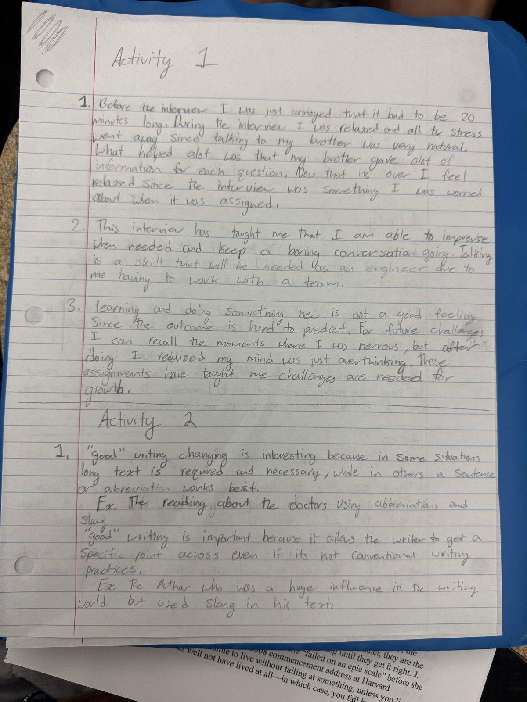
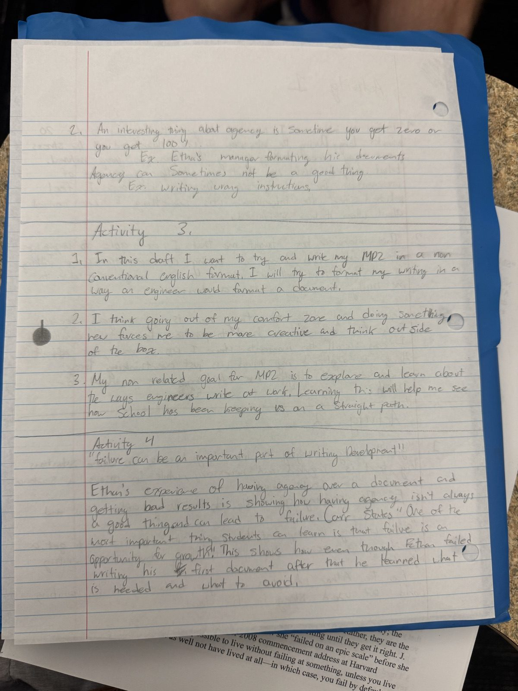

In-Class Writing for MP2
Four short handwritten activities from class about my interview, good writing, agency, and failure.


1. Before the interview I was just annoyed that it had to be 20 minutes long. During the interview I was relaxed and all the stress went away, since talking to my brother was very natural. What helped a lot was that my brother gave a lot of information for each question. Now that it's over I feel relaxed, since the interview was something I was worried about when it was assigned.
2. This interview has taught me that I am able to improvise when needed and keep a boring conversation going. Talking is a skill that will be needed as an engineer, due to me having to work with a team.
3. Learning and doing something new is not a good feeling, since the outcome is hard to predict. For future challenges I can recall the moments where I was nervous, but after doing it I realized my mind was just overthinking. These assignments have taught me challenges are needed for growth.
1. “Good” writing changing is interesting because in some situations long text is required and necessary, while in others a sentence or abbreviation works best. Ex. The reading about the doctors using abbreviations and slang.
“Good” writing is important because it allows the writer to get a specific point across, even if it's not conventional writing practices. Ex. The author who was a huge influence in the writing world but used slang in his text.
2. An interesting thing about agency is sometimes you get zero or you get 100%. Ex. Ethan's manager formatting his documents. Agency can sometimes not be a good thing. Ex. Writing wrong instructions.
1. In this draft I want to try and write my MP2 in a non-conventional English format. I will try to format my writing in a way an engineer would format a document.
2. I think going out of my comfort zone and doing something new forces me to be more creative and think outside of the box.
3. My non-related goal for MP2 is to explore and learn about the ways engineers write at work. Learning this will help me see how school has been keeping us on a straight path.
“Failure can be an important part of writing development.”
Ethan's experience of having agency over a document and getting bad results is showing how having agency isn't always a good thing and can lead to failure. Carr states, “One of the most important things students can learn is that failure is an opportunity for growth.” This shows how even though Ethan failed writing his first document, after that he learned what is needed and what to avoid.